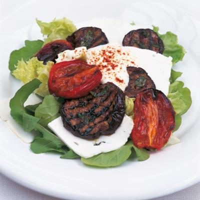

Delia's Char-grilled Aubergine Salad

Ingredients
Method
- Skin the 8 plum tomatoes by covering them with boiling water for 1 minute, then drain them and slip off their skins. Alternatively, if you have a gas hob, burn the skins off on a hob flame.
- Place the tomatoes onto a baking tray, cut-side up, drizzle over olive oil and roast for 50-60 mins.
- Lay out the 2 medium aubergine slices and sprinkle both sides with salt (to dry them) and wait for 20 mins.
- Blot the aubergine with kitchen paper to remove the moisture and brush them with olive oil and sprinkle with pepper.
- Brush a griddle pan lightly with olive oil and get to a high heat before grilling the aubergine for about 2 ½ mins on each side.
- Add 6 tbsp of the olive oil in a bowl with the 1 heaped tbsp basil, 2 tbsp balsamic vinegar and mix in the aubergine slices.
- Divide the 110g salad leaves between 4 plates and arrange the tomatoes and aubergines alternately all around. Then place the 200g feta slices in the middle of each salad and drizzle with the remaining marinade.
- Put 1 tbsp of the crème fraîche on top of each salad and sprinkle a little paprika over.